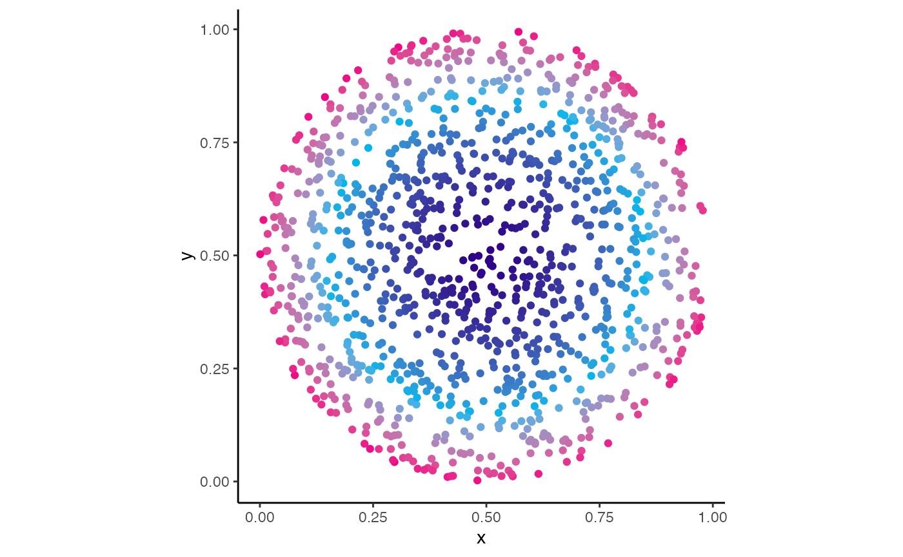
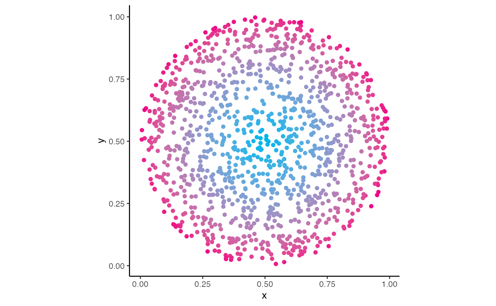

HGUThemes was made to include a lot of shortcuts to
allow you to quickly format your ggplot2 plots to use
colours present in the MRC HGU Powerpoint colour theme. There are
currently two main ways of doing this (i) use functions to quickly
access colour hex codes and (ii) use functions to quickly add layers
that automatically colour your plots.
Please be conscious about making your plots accessible to people who suffer from colourblindness and related conditions when choosing your colour themes. Many packages are available to help with this, including viridis and ColourblindR as well as many more. We also highly recommend colorblindr that contains functions that allow you to simulate many forms of colourblindness to ensure accessibility.
Accessing Colour Hex Codes
There are many ways of representing colours whilst you are coding, one very common method that we use in this package (and is widely used in R) are hex codes. Here, “hex” is short for “hexadecimal”, which is a number system that uses the numbers 0-9 as well as the letters A-F (more info here). A colour can be represented in hex as a character string starting with a # and followed by 6 characters from either 0-9 or A-F. Here are some common hex colours:
-
Black:
#000000 -
White:
#FFFFFF -
Red:
#FF0000 -
Green:
#00FF00 -
Blue:
#0000FF -
Gold:
#FFD700 -
Silver:
#C0C0C0 -
Bronze:
#967444
Rather than having to remember these codes, HGUThemes
has functions to remember useful ones for you. The most prominent
colours from the MRC HGU Powerpoint template are the three shades of
blue present in the logo in the bottom left (as well as default colours
for text box text and shapes). Here are these three colours in hex:
-
Dark Blue:
#2D2E5F -
Mid Blue:
#3A88A9 -
Light Blue:
#00BAD2
Rather than writing these down, you can access them using
HGUTheme functions:
# MRC HGU Dark Blue
hgu_dark()
#> [1] "#2D2E5F"
# MRC HGU Mid Blue
hgu_mid()
#> [1] "#3A88A9"
# MRC HGU Light Blue
hgu_light()
#> [1] "#00BAD2"These can be useful for quickly colouring ggplot2 plots,
lets make a quick example. A fairly common plot you might make as a
scientist is a scatter plot with a trend and then putting a linear
regression line on top. First we can make some fake data
plot_data <- tibble(
x = runif(100),
y = x + rnorm(100, 0, 0.2)
)
plot_data
#> # A tibble: 100 × 2
#> x y
#> <dbl> <dbl>
#> 1 0.196 0.00780
#> 2 0.685 0.908
#> 3 0.514 0.679
#> 4 0.414 0.720
#> 5 0.154 0.195
#> 6 0.782 0.704
#> 7 0.313 0.408
#> 8 0.00953 -0.0679
#> 9 0.144 -0.0359
#> 10 0.951 1.10
#> # … with 90 more rowsThen we can make a simple plot that you might make for a presentation:
ggplot(
data = plot_data,
mapping = aes(x = x, y = y)
) +
# Adding a y = x line
geom_abline(
intercept = 0, # Setting the intercept of the line to 0
slope = 1, # Setting the slope of the line to 1
linetype = 2, # Setting the line to be dashed
size = 1.5, # Setting the line to be slightly thicker than default (default is 1)
colour = "blue" # Setting the colour of the line to blue
) +
# Adding a scatter plot
geom_point(
colour = "black" # Setting the colour of the points to black (black is the default)
) +
# Adding linear regression line
geom_smooth(
method = "lm", # Setting the method to calculate the line to linear regression
se = FALSE, # Removing the standard error bars
colour = "red" # Setting the colour of the line to red
) +
theme_bw() + # Adding a black and white theme
# Adding labels to the plot
labs(
title = "Comparing X and Y", # Setting the title
caption = "Blue dashed line shows 1:1 relationship" # Setting the caption
)
Here we have some points in black, a linear regression line in red
and a reference line of y = x in blue. In the code you can see that we
have used some already built in presets to set the colours of each of
these elements using colour names (e.g. "blue"). If you
wanted to set the colour of parts of these plots to be that of the MRC
HGU logo you can replace this with the hex code functions (which will
supply the hex code instead).
ggplot(
data = plot_data,
mapping = aes(x = x, y = y)
) +
# Adding a y = x line
geom_abline(
intercept = 0, # Setting the intercept of the line to 0
slope = 1, # Setting the slope of the line to 1
linetype = 2, # Setting the line to be dashed
size = 1.5, # Setting the line to be slightly thicker than default (default is 1)
colour = hgu_mid() # Setting the colour of the line to blue
) +
# Adding a scatter plot
geom_point(
colour = hgu_dark() # Setting the colour of the points to black (black is the default)
) +
# Adding linear regression line
geom_smooth(
method = "lm", # Setting the method to calculate the line to linear regression
se = FALSE, # Removing the standard error bars
colour = hgu_light() # Setting the colour of the line to red
) +
theme_bw() + # Adding a black and white theme
# Adding labels to the plot
labs(
title = "Comparing X and Y", # Setting the title
caption = "Blue dashed line shows 1:1 relationship" # Setting the caption
)
You may not want to go all out with the colours, as has been done here, but this shows you the concept of how you can use these functions to quickly access the hex codes from the MRC HGU colour theme to use wherever will accept a colour.
Adding Layers To ggplot2 Plots
There are a few common cases where you will want to apply certain
colour themes to a ggplot2 plot. To save time, these have
been coded and supplied as part of this package. An obvious example of
this is a three column bar chart:
plot_data <- tibble(
class = c("A", "B", "C"),
value = c(0.5, 0.3, 0.2)
)
plot_data
#> # A tibble: 3 × 2
#> class value
#> <chr> <dbl>
#> 1 A 0.5
#> 2 B 0.3
#> 3 C 0.2
ggplot(
data = plot_data,
aes(x = class, y = value)
) +
# Adding column plot
geom_col() +
theme_bw() # Adding a black and white theme
In this case, the colour is not giving any information to the plot
and so changing the colours will only be an aesthetic change and not
affect the message of the plot. Here we have three different “classes”
(represented on the x-axis) that we can colour using the
fill.
ggplot(
data = plot_data,
aes(x = class, y = value, fill = class)
) +
# Adding column plot
geom_col() +
theme_bw() # Adding a black and white theme
Just adding class as a fill aesthetic colours in the
plot using the default ggplot2 colour theme, which is not
very fitting in the powerpoint theme and can look rather “garish”. We
can quickly add the MRC HGU theme using the function
scale_fill_hgu3() (we also use the guides
function to remove the colour legend as it is not necessary).
ggplot(
data = plot_data,
aes(x = class, y = value, fill = class)
) +
# Adding column plot
geom_col() +
theme_bw() + # Adding a black and white theme
guides(fill = "none") + # Removing the legend for the fill colours
scale_fill_hgu3() # Adding the MRC HGU colour theme
The 3 in scale_fill_hgu3 stands for 3 colour, if you are
making a similar plot with 2 colours then the
scale_fill_hgu2 can be used instead
plot_data <- tibble(
class = c("A", "B"),
value = c(0.6, 0.4)
)
ggplot(
data = plot_data,
aes(x = class, y = value, fill = class)
) +
# Adding column plot
geom_col() +
theme_bw() + # Adding a black and white theme
guides(fill = "none") + # Removing the legend for the fill colours
scale_fill_hgu2() # Adding the MRC HGU colour theme
By default, this uses the darkest and lightest blues, this can be
quickly changed by using similar scale_fill_hgu2_*_*
functions. For example, to use the mid blue (mid) and light blue (high)
as your two colours for the plot, the
scale_fill_hgu2_mid_light function can be used instead
ggplot(
data = plot_data,
aes(x = class, y = value, fill = class)
) +
# Adding column plot
geom_col() +
theme_bw() + # Adding a black and white theme
guides(fill = "none") + # Removing the legend for the fill colours
scale_fill_hgu2_mid_high() # Adding the MRC HGU colour theme
In these examples the colour was only being used for aesthetic purposes. Please be careful if you are conveying information using the colours as this can make very confusing plots, expecially for people with colourblind related conditions. For example, this scatter plot is not an appropriate use of the colours.
plot_data <- tibble(
x = runif(100),
y = runif(100),
colour = rep(c("A", "B"), 50)
)
ggplot(
data = plot_data,
mapping = aes(x = x, y = y, colour = colour)
) +
geom_point() + # Creating scatter plot
theme_classic() + # Adding the classic theme
scale_colour_hgu2_mid_high() + # Adding the mid and light blue MRC HGU colour theme
# Adding title
labs(
title = "An **Inappropriate** Use Of The Colour Palette"
)
It is very hard for anyone to tell the difference between these
colours. In the same vein, HGUTheme provides gradient
functions to be used to colour plots by a continuous variable. Here is
an example
plot_data <- tibble(
x = rnorm(100000),
y = rnorm(100000)
)
ggplot(
data = plot_data,
mapping = aes(x = x, y = y)
) +
geom_hex(bins = 40) + # Adding density plot
theme_classic() + # Setting the theme to classic
scale_fill_gradient_hgu() # Adding the MRC HGU colour theme gradient
Although these functions are supplied (mostly out of completeness) it
is much clearer to use a theme such as those supplied by the
viridis package
ggplot(
data = plot_data,
mapping = aes(x = x, y = y)
) +
geom_hex(bins = 40) + # Adding density plot
theme_classic() + # Setting the theme to classic
scale_fill_viridis_c() # Adding a colourblind friendly theme from viridis